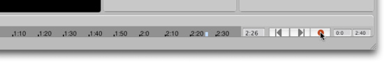
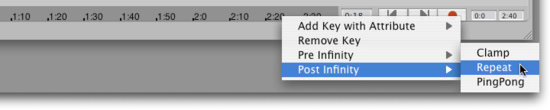
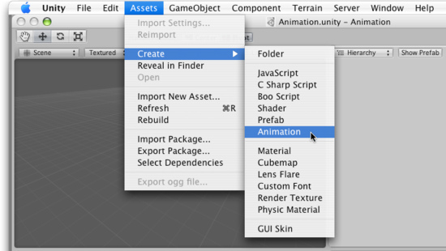

Animation
Animation
Animations are best imported from your 3D animation program, but can also be created inside Unity. Unity's animation creation system is meant to be an aid for those who do not have access to a 3D animation program. It is optimal for you to use an externally-created animation.
To import an animation from your art package, just drop in your model files. When you place your model file in your Project folder's Assets folder, it will automatically appear in the Project View and you can drag it to the Scene View. The animation on all objects in the scene are imported automatically and you will see the animation playing when you press the button.
For more information about animating characters or importing animations see the Character Animation section.
Timeline View
Unity allows you to use a Timeline View to create and edit animations. The Timeline has an actual keyframe viewer, and some controls.

The Timeline has a keyframe section, control buttons, and keyframe start/end point settings
1:0 is one second, not one minute. Animations are played back at 60 frames per second. So on the Timeline, each second is broken down into 60ths. This format is standard time representation in most 3D animation packages as well as video editing applications.
If you use the scrollwheel while the mouse is over the timeline, you'll see the timeline shrink/expand so you can set keyframes for longer animations.
You can edit the two fields on the right directly, they represent start time and end time of the visible timeline duration.
Creating animations inside Unity
Here are the basic steps to create a new animation for a single GameObject:
- Using the drop-down in the upper-right hand corner of the Editor, switch to the Animation layout. This will display the Timeline. In the Timeline you can create and modify animations.

- Select the object you want to animate in the Scene or Hierarchy View.
- Click on the Record button in the Timeline.

- Select another time in the Timeline by clicking on it. Then move the object somewhere else and hit Record again.
If you hit Play now, your object will follow the animation you just created.
Fine-tuning animations
By default only the Transform's Position, Rotation and Scale are included in the animation. You can animate other properties if you like. Using the Right-click context menu, you can set a keyframe for a property of any Component currently attached to the GameObject. Right-click on the Timeline and use the menu item to set keyframes for other Component properties.
The properties of every Component attached to the GameObject can be animated
Hints
- You can reposition a keyframe on the timeline by dragging it with the center mouse button.
- Post Infinity is used to define behaviour of the animation after the last keyframe. Right-click on the timeline and select from the context menu.

- Sometimes it is useful to create animations which are shared among all objects. To do this, create an Animation Clip from the Assets menu.

Next, drag the Animation Clip onto an object. Then, animate the object. Now you can drag the Animation Clip onto other objects.